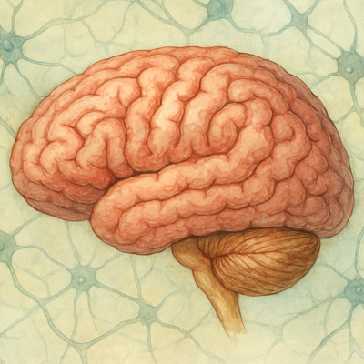

Cérebro
O que iremos aprender
- algun tópico
- algun tópico
- algun tópico
- algun tópico

O corpo humano é uma máquina extraordinária, composta por sistemas complexos que trabalham em perfeita sincronia para manter a vida. No centro dessa engrenagem estão os órgãos vitais — estruturas indispensáveis para o funcionamento básico do organismo. Sem eles, a sobrevivência seria impossível.
Órgãos vitais são aqueles cuja ausência ou falha compromete gravemente a vida. Eles desempenham funções essenciais como respiração, circulação, digestão, controle neural e filtragem de toxinas. Embora o corpo possua dezenas de órgãos, apenas alguns são considerados verdadeiramente vitais.
- Cérebro: Centro de comando do corpo. Controla pensamentos, emoções, movimentos e funções involuntárias como respiração e batimentos cardíacos.
- Coração: Bomba muscular que impulsiona o sangue por todo o corpo, garantindo a distribuição de oxigênio e nutrientes.
- Pulmões: Responsáveis pela troca gasosa — absorvem oxigênio e eliminam dióxido de carbono.
- Fígado: Realiza mais de 500 funções, incluindo a filtragem de toxinas, produção de proteínas e armazenamento de energia.
- Rins: Filtram o sangue, regulam o equilíbrio de líquidos e eliminam resíduos através da urina.
Agora que conhecemos os principais órgãos vitais e suas funções, é hora de mergulhar mais fundo nesse universo fascinante. Entender como cada órgão interage com os demais sistemas do corpo nos permite enxergar a complexidade e a inteligência por trás da vida humana. Vamos explorar os mecanismos que regulam nossa respiração, circulação, metabolismo e consciência — revelando como pequenas estruturas podem ter impactos gigantescos na nossa saúde e bem-estar.
Os órgãos principais são considerados vitais porque desempenham funções essenciais para a manutenção da vida.
Cada um deles está diretamente ligado ao equilíbrio e ao bom funcionamento do corpo humano, atuando de forma integrada para que possamos respirar, circular o sangue, metabolizar nutrientes e eliminar toxinas.
A seguir, você encontrará os principais órgãos vitais representados em cartões interativos: selecione um órgão para explorar em detalhes como ele funciona e qual a sua importância para a nossa saúde.

Além dos órgãos vitais principais, existem outros que desempenham funções igualmente fundamentais para a manutenção da vida e da saúde.
Eles participam de processos como a digestão, a absorção de nutrientes, a defesa do organismo e a regulação do metabolismo.
Embora sua falha nem sempre cause a morte imediata, compromete seriamente o equilíbrio do corpo e a qualidade de vida.
Nesta seção, vamos explorar esses órgãos importantes e compreender como eles atuam em conjunto com os principais para garantir o bom funcionamento do organismo.